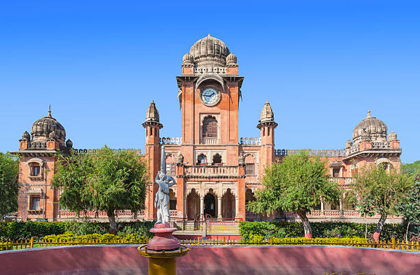
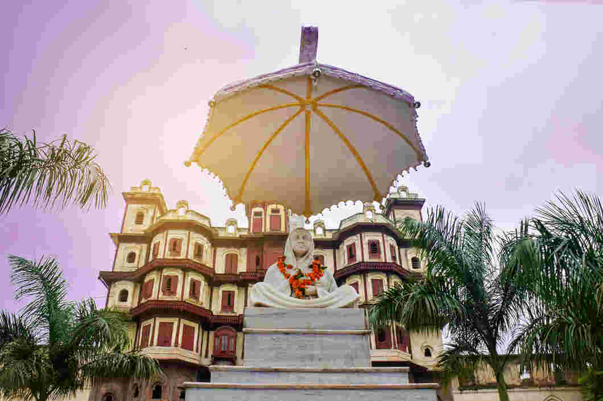
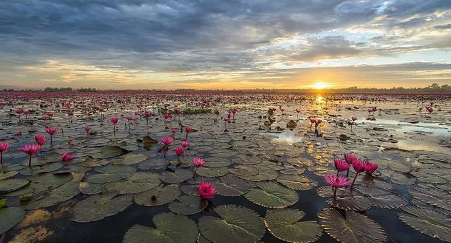
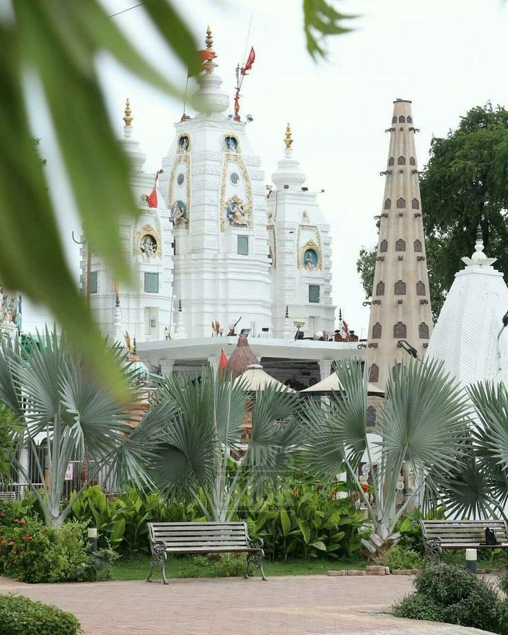
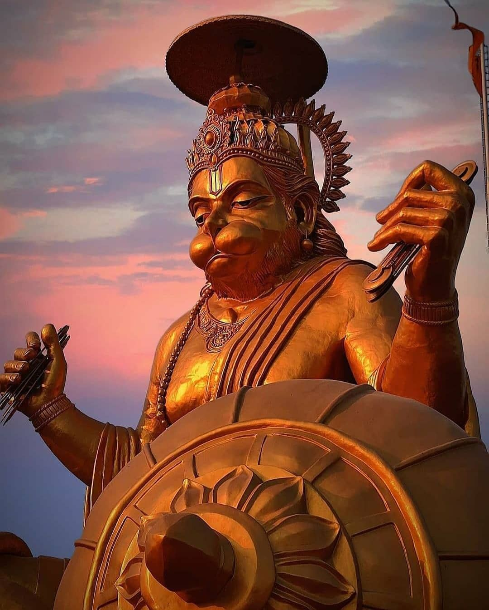

The Cleanest City in India
Indore is a vibrant city in the state of Madhya Pradesh, India. Known for its cleanliness, bustling markets, and rich history, Indore is a place where tradition meets modernity. With a thriving economy, top-notch education, and cultural significance, Indore has earned its title as the cleanest city in India for multiple years.
Here, you will find a blend of historical monuments, modern infrastructure, and a rich cultural heritage. The people of Indore are known for their hospitality, and the food culture here is unparalleled.
Indore offers some of the most scenic and breathtaking views. Here are some images showcasing the beauty of the city.
    Indore has been recognized as the cleanest city in India for several consecutive years, and its sanitation system is the pride of the city.
Indore's food culture is famous for its street food, and the city's local delicacies like Poha-Jalebi, Samosa, and Dahi-Puri are loved by everyone.
Indore is home to historic landmarks like Rajwada Palace, Lal Baag Palace, and Kanch Mandir, which reflect its glorious past.